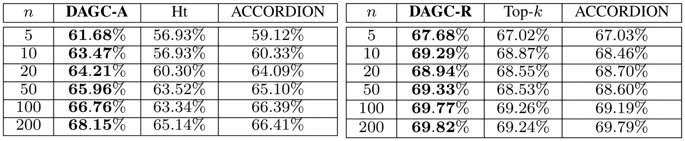

DAGC: Data-Aware Gradient Compression for FL in
Communication-Constrained Mobile Computing
INFOCOM 2023 & TMC 2024
- Rongwei Lu
- Yutong Jiang
- Yinan Mao
- Chen Tang
- Bin Chen
- Laizhong Cui
- Zhi Wang
Tsinghua University, Harbin Institute of Technology, Shenzhen University

Method
DAGC sets different compression ratios to workers depending on the worker size. Large workers (i.e., the workers with large data volumes and similarly to small and medium workers) are assigned conservative compression ratios, and small workers adopt aggressive compression ratios.
Abstract
Federated Learning (FL) in mobile environments faces significant communication bottlenecks. Gradient compression has proven as an effective solution to this issue, offering substantial benefits in environments with limited bandwidth and metered data. Yet, it encounters severe performance drops in non-IID environments due to a one-size-fits-all compression approach, which does not account for the varying data volumes across workers. Assigning varying compression ratios to workers with distinct data distributions and volumes is therefore a promising solution. This work derives the convergence rate of distributed SGD with non-uniform compression, which reveals the intricate relationship between model convergence and the compression ratios applied to individual workers. Accordingly, we frame the relative compression ratio assignment as an $n$-variable chi-squared nonlinear optimization problem, constrained by a limited communication budget. We propose DAGC-R, which assigns conservative compression to workers handling larger data volumes. Recognizing the computational limitations of mobile devices, we propose the DAGC-A, which is computationally less demanding and enhances the robustness of compression in non-IID scenarios. Our experiments confirm that the DAGC-R and DAGC-A can speed up the training speed by up to 25.43% and 16.65% compared to the uniform compression respectively, when dealing with highly imbalanced data volume distribution and restricted communication.
Motivation
We validate the following two points through a series of motivating experiments:
1) In communication-constrained environments, a compression strategy with different compression ratios can achieve faster convergence compared to uniform compression.
2) A strategy that sets higher compression ratios for large workers usually achieves faster convergence than those for small workers reducing the number of iterations by up to 69.70%.
Theoretical Analysis
Convergence rate in convex scenarios: $$\mathcal{O} \left( \frac{\sigma^2}{\epsilon} + \frac{\zeta \Phi}{\sqrt{\epsilon}} + \Phi \right)$$
Convergence rate in non-convex scenarios: $$\mathcal{O} \left( \frac{\sigma^2}{\epsilon^2} + \frac{\zeta \Phi}{\epsilon^{3/2}} + \frac{\Phi}{\epsilon} \right)$$
Identify the key factor $\Phi$: $$\frac{\sum\limits_{i=1}^{n} \frac{p_i}{\sqrt{\delta_i}}}{\sqrt{\delta_{\min}}}$$
$p_i$: the data volume of the $i$-th node
$\delta_i$: the compression ratio of $i$-th node
$n$: the number of nodes
Evaluation Experiments
DAGC saves up to 25% iterations in communication-constrained non-IID scenarios.
|  |
Even under $n=200$, DAGC still shows better performance than other algorithms, which indicates the scalability of DAGC.